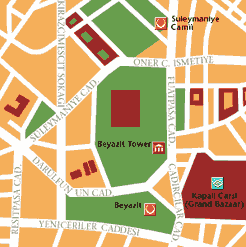
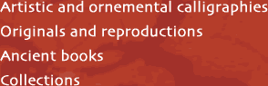
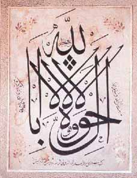
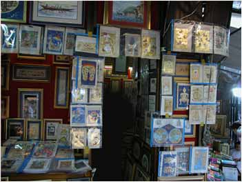
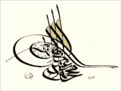

The bookshop
is located in the Beyazit district,
right in the heart of Istanbul's historic centre,
and is open for business from Monday to Saturday between 9 am and 6 pm.
ABUL AL-FIDA,'Imad
al-Din, De Vita, and Rebus Gestis Mohammedis, Moslemicae Religionis Auctoris,
and Imperii Saracenici Fundateris.
Oxford, Theatro Sheldoniano 1723
DÜRER, Albrecht,
The Little Passion. With the poems of the first edition
of 1511 by Benedictus Chelidonius Musophilus in Latin with the English version.
Officina Bodoni Verona: 1971.
HEROLD, Johannes Basilius,
Haereseologia, hoc est opus veterum tam Graecorum quam Latinorum theologorum,
per quos omnes ... haereses confutantur, & summa omnia Theologiae capita
quaestionesque ... explicantur
Basel: H. Petri, September 1556
KORAN, Al-Coranus ex
idiomate Arabico quo primum a Mohammede conscriptus est, Latine versus per
Ludovicum Marraccium.
Lipsiae, Sumtibus Lanckisianis 1721
TORNBERG, CARL JOHAN,
Ibn-el-Athirs chroenika. Elfte delen ifraan arabiskan oefversatt.
Parts 1 - 41 in one volume. Lund 185053.